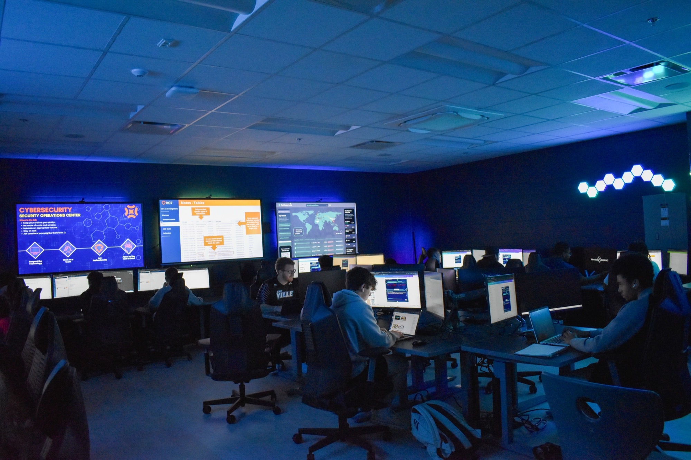
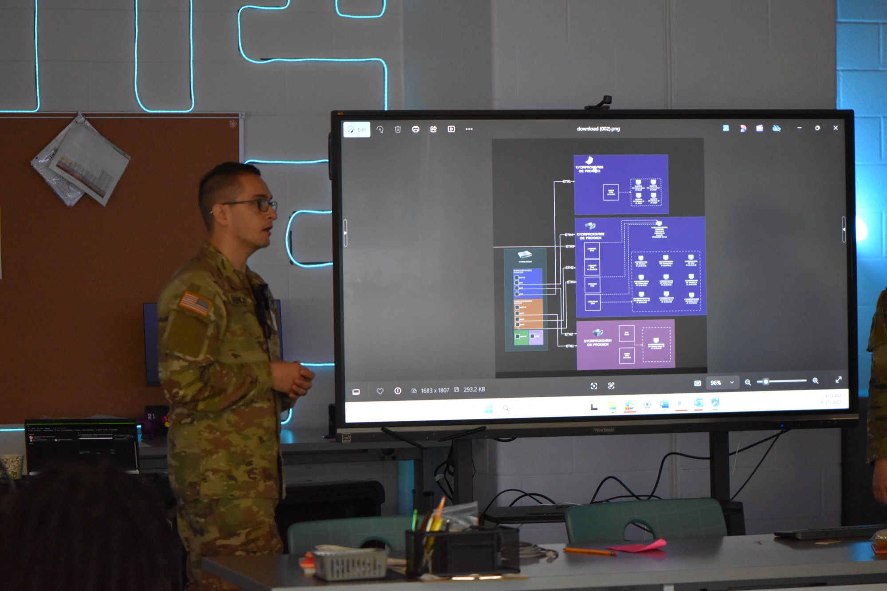
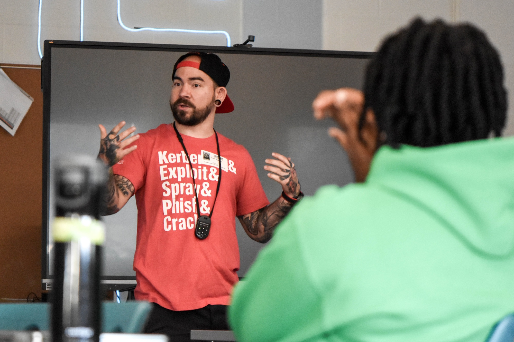
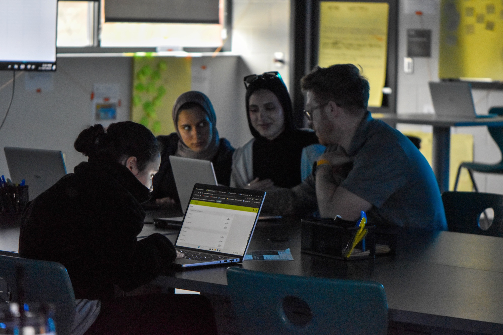
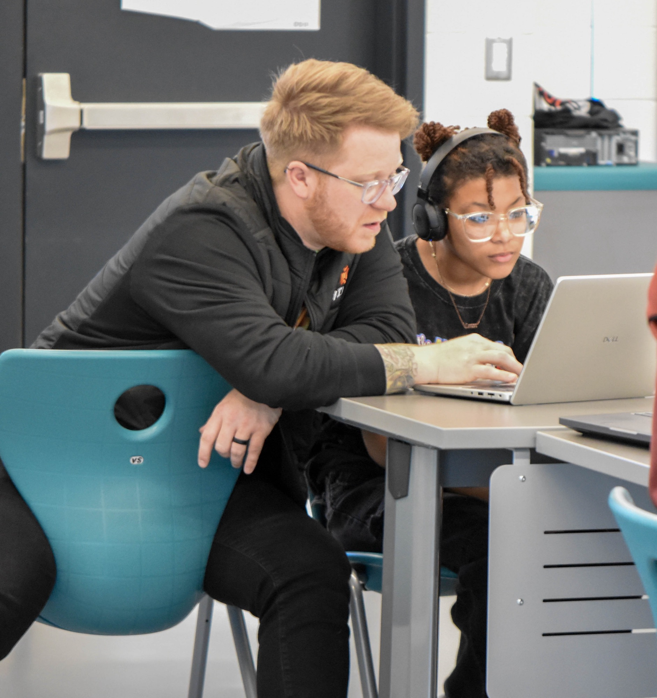

Program Gallery
Inside the Lab






In this program, students will learn how to secure businesses by implementing industry-standard policies and procedures. They will also learn how to analyze and investigate data to identify and mitigate cyber attacks. Finally, they will develop skills needed to communicate risks and practices to a range of diverse audiences.




Students work with industry-standard security tools used by real professionals. Students use Azure Data Explorer through with KC7 Cyber and Linux Virtual machines with Cyber.org
The program prepares students for industry-recognized certifications. Students will obtain certifications for IC3, ITS Cybersecurity, and SC-900 through Microsoft.
The Cybersecurity program at The HILL is a 3-year program for any grade level. Students will begin with entry-level skills before working towards internships and dual credit.
We are currently in the process of building our own server stack to host Virtual Machines so that students can run real scenarios using data generated from our partners' experiences.
Using the KC7 Cyber platform, students participate in CTF-like challenges to gain real-world experience and recognition. Tabletop exercises are organized by The University of Kentucky and CISA.
This program will prepare students for everything from entry level positions such as helpdesk to high stakes positions like security analysts and IT Administrators.